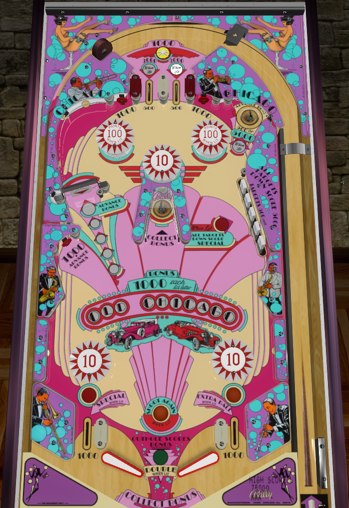

Build bonus with the lit top lane, upper right hole, left spinner, and lower left standup target. Collect the bonus repeatedly at the center hole.
One of the two top lanes is lit for 3,000 points, while the other scores 500 points. Which lane is lit alternates with each hit to the switches on either side of the lanes that form sort of funnel walls.
On 3-ball play, the lit lane gives 3 bonus advances. On 5-ball play, only 1 bonus advance is awarded.
A star rollover immediately above the lanes scores 1,000 points. It's not particularly worth trying to nudge to make sure it gets hit.
Awards 500 points (or 5,000 when lit, but I've never actually seen it get lit by anything) and a bonus advance. Kickout from this saucer should hit the tip (the lower 1/3) of the left flipper.
Awards 100 points per spin. Every 5th spin advances the bonus. A loose, well-lubed spinner can get 3 or possibly 4 bonus advances from a good rip. The spinner is a later shot on the right flipper than you might expect.
Awards 1,000 points and a bonus advance. Not recommended to shoot for, since the ball is liable to end up out of control and bouncing off the lower left bumper after hitting the target.
Can largely be ignored in competition play, but give decent awards in casual play.
Each individual target scores 500 points. Completing the bank scores 5,000 points. Completions after the first also award a special.
Once the drop targets are completed once, one or both out lanes is lit for the remainder of the ball. The left out lane awards a special when lit, and the right out lane awards an extra ball when lit. Depending on settings, these will either be lit one at a time alternating on switch hits, or lit at the same time for the entire rest of the ball.
There are no settings in Old Chicago that make the special an extra ball give points, so these awards are likely irrelevant in competition play.
EM scoring timing is in play for these drop targets. Hitting two at the same time will likely result in getting the score credit for hitting only one.
Awards the current bonus. Does not drain the bonus, so can be collected repeatedly without needing to build it back up in between.
The hole only collects the base bonus; it is still only worth 1,000 points per lit letter in Old Chicago even on balls where double bonus is lit.
This scoop kicks out to the right flipper and can usually be trapped easily.
Old Chicago has a very unique bottom of table. Be careful holding a flipper up to get control, as the ball can sometimes bounce "backwards" and end up in danger of falling down an out lane. Dead bounces usually deflect into the small vertical wall next to the opposite flipper, but raising the flipper to get control out of this needs to be done carefully lest the ball get completely flipped away.
Try to avoid the lower 10 point bumpers at any cost. If the ball gets stuck below a bumper or between a bumper and the corresponding outer wall, it'll end up getting spiked down the out lane surprisingly often.
If the ball is rolling down the rail toward the out lane, a well timed up nudge can usually pop the ball over the lane. Be mindful of the strength of this, though, as you really don't want to tilt on this game, especially on a double bonus ball.
Bonus maxes out at 10,000 points. There is no way to rebuild, extend, or hold the bonus, so just whack the ball into the center collect scoop as many times as possible.
Double bonus cannot be earned; it can only be given for free on certain ball numbers based on settings. On 5 ball games, double bonus can either be balls 1-3-5 or balls 3 and 5; on 3 ball games, double bonus can either be balls 1 and 3, or ball 3 alone.
This game does have an over the top buzzer. Try not be frightened by the loud buzzing horn if the score is rolled past 100,000.

All copyrighted names and terms in this document belong to their respective owners. The information provided in this document is for educational purposes only and no infringement is intended.
Back to top To game list To main page